1General Remarks
Today, digital modulation schemes are widely used in communication systems, and the increasing need for data bandwidth has pushed the signal purity and modulation bandwidth requirements for modern vector signal sources. Other applications with similar performance requirements include radio surveillance, interference analysis, radar signal analysis and electronic warfare.
Addressing these demanding requirements, Berkeley Nucleonics' Model 875 series of vector signal generators (VSGs) provide frequency coverage to 40 GHz and are available as single output desktop units or rack-mount instruments with multiple phase-coherent outputs. The Model 875 series offers a cost-effective and flexible tool for generating high-quality, complex, wideband, digitally modulated signals.
Among others, the following applications are supported:
- Upload IQ data into memory. Upload multiple formats of IQ data into Model 875 memory. The 875 internal AWG can play selected sections of the RAM upon a user trigger.
- Play predefined formats. Use Model 875 to synthesize and play predefined digital modulation formats.
- Live IQ streaming. Use the FCP interface to live stream and play digital IQ data.
- Analog IQ inputs. Use the analog IQ inputs with up to 250 MHz IQ bandwidth.
- Segment switching. Use FCP to instantaneously switch between pre-loaded IQ data segments.
- Ultra-fast hopping. Use FCP to control the Model 875 for ultra-fast frequency hopping.
All Model 875s operate with an ultra-stable temperature compensated frequency reference (OCXO) that can be phase-locked to an external reference.
The compact unit allow for full front panel control via touch panel display, and PC GUI Software supported operation via ETHERNET, USB, FCP (fast control port) and GPIB communication ports.
Validity of this Manual
This manual is valid for the following devices and their derivative versions:
- Model 875 (-X)
2Form Factor
The devices are available in the following chassis:
Desktop Case
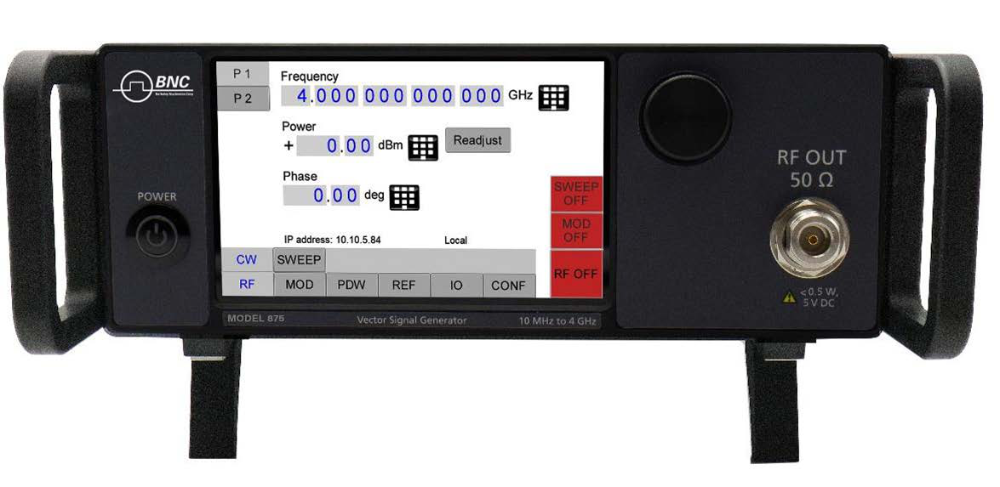
Compact Portable Case
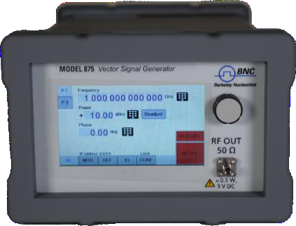
2U Case
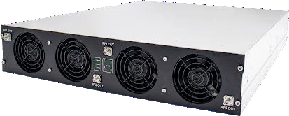
Data Connections
The devices may only be connected to a network or a computer by using a shielded LAN cable. Unless shorter lengths are prescribed, a maximum length of 3 m must not be exceeded for the LAN and the USB connection.
Signal Connections
In general, all connections between the signal generator and another device should be made as short as possible and must be well shielded. It is recommended to use a high-quality cable with low loss especially for frequencies above 20 GHz.
Transportaton
The devices must only be transported with the packaging supplied by the manufacturer. The device can be lifted up or transported in any orientation.
3Safety Information
The following pieces of information are important to prevent personal injury, loss of life or damage to the equipment. Please read them carefully. If the device is used in a manner not specified by this manual, the protection provided by the device may be impaired.
Signal Symbol
In this manual, the following symbols are used to warn the reader about risks and dangers.
Labels on Products
The following labels are on the products. Familiarize yourself with the meaning of each of the labels before using the product.
| Label | Meaning |
|---|---|
| Direct Current (DC) | |
| Alternating Current (AC) | |
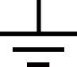 | Earth (Ground) |
| EU label for separate collection of electrical and electronic waste. | |
| Caution, general danger zone. Attend the manual and/or a notice on the device. |
General Safety Considerations
FCC notice
This equipment has been tested and found to comply with the limits for a Class A device, pursuant to Part 15 of the FCC Rules. These limits are designed to provide reasonable protection against harmful interference when the equipment is operated in a commercial environment. This equipment generates, uses, and can radiate radio frequency energy and, if not installed and used in accordance with the instruction manual, may cause harmful interference to radio communications.
Operation of this equipment in a residential area may cause harmful interference in which case the user will be required to correct the interference at his or her expense.
CE notice
The instrument meets the EMC directive and the Low Voltage Directive described in the CE declaration in the datasheet.
4Connector View
Front & Rear View: Benchtop with Touch Display
The front panel contains a touch display, RF output female SMA connector (up to 20 GHz), or a K connector (40 GHz devices). The touch display shows information on the current function. Information includes status indicators, frequency and amplitude settings, current connectivity status, and error messages.
Front Panel
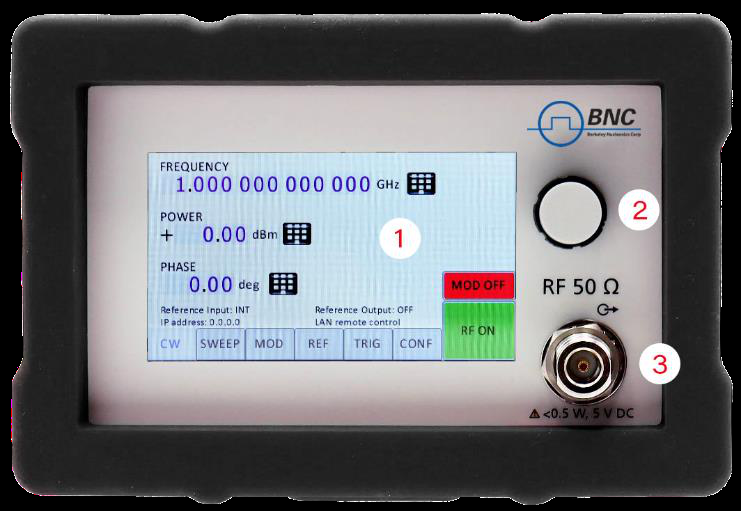
- Main touch display: The main touch display shows information on the current function, such as frequency, power, reference.
- Rotaty Button: The rotary button is used to change the value selected on the screen.
- RF 50Ω connector: This female SMA respectively K connector provides the output for generator signals. Please check the data sheets for more details.
Rear Panel
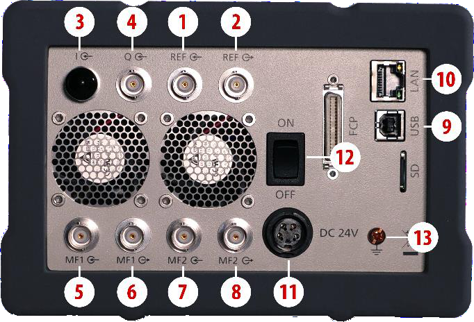
| # | Connector | Description |
|---|---|---|
| 1 | REF input | This BNC female Connector is the input for the reference signal. |
| 2 | REF output | This BNC female Connector is the output of the reference signal. |
| 3 | I input | This BNC female Connector is the input for analog in-phase signals. |
| 4 | Q input | This BNC female Connector is the input for analog quadrature signals. |
| 5 | MF1 input | This BNC female Connector is a multifunction input. |
| 6 | MF1 output | This BNC female Connector is a multifunction output. |
| 7 | MF2 input | This BNC female Connector is a multifunction input. |
| 8 | MF2 output | This BNC female Connector is a multifunction output. |
| 9 | USB B | The USB B connector is used to connect the device to a computer USB port. |
| 10 | LAN | The LAN connector is used to connect the device to a network. |
| 11 | Power Supply | Connector for the BNC power adaptor. |
| 12 | ON/OFF Switch | Turns the device on or off. |
| 13 | Ground Screw | The screw can be used to connect the device to earth ground (if required). |
2U Rackmount
Front Panel
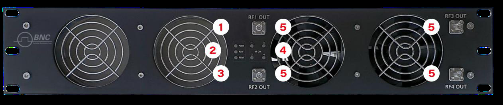
- Power LED: The power LED is indicating whether the device is on or off.
- Ready LED: The ready LED indicates that the boot process is completed and ready to be used.
- Remote LED: The remote LED is indicating whether the device is connected to a Computer or not.
- RF LED [1..4]: This LED indicates whether the RF signal is on or off.
- RF OUT [1..4]: This female K- type respectively SMA connector provides the output for generator signals. The impedance is 50Ω. Please check the data sheets for more details.
Rear Panel
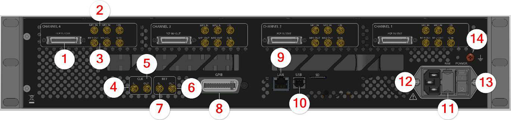
Ports available per RF channel:
| # | Port | Description |
|---|---|---|
| 1 | FCP | Fast Control Port, see application note. |
| 2 | MF input [1..2] | SMB jack is a multifunction input port. |
| 3 | MF output [1..2] | SMB jack is a multifunction output port. |
Ports belong to the instrument:
| # | Port | Description |
|---|---|---|
| 4 | CLK IN | Proprietary port for multi-device synchronization: SMB jack. |
| 5 | CLK OUT | Proprietary port for multi-device synchronization: SMB jack. |
| 6 | REF OUT | This BNC female Connector is the output for the reference signal. |
| 7 | REF IN | This BNC female Connector is the input for the reference signal. |
| 8 | GPIB Connector | With option "GPIB," on this position is the GPIB connector. |
| 9 | LAN | The LAN connector is used to connect the device to a network. |
| 10 | USB B | The USB B connector is used to connect the device USB hub / port. |
| 11 | FUSE Holder | This holder contains an replaceable fuse. |
| 12 | AC Power | Connector for AC power. |
| 13 | ON/OFF Switch | Turns the device on or off. |
| 14 | Ground Screw | The screw can be used to connect the device to earth ground (if required). |
5Minimum Distances & Operating Conditions
Minimum Distances
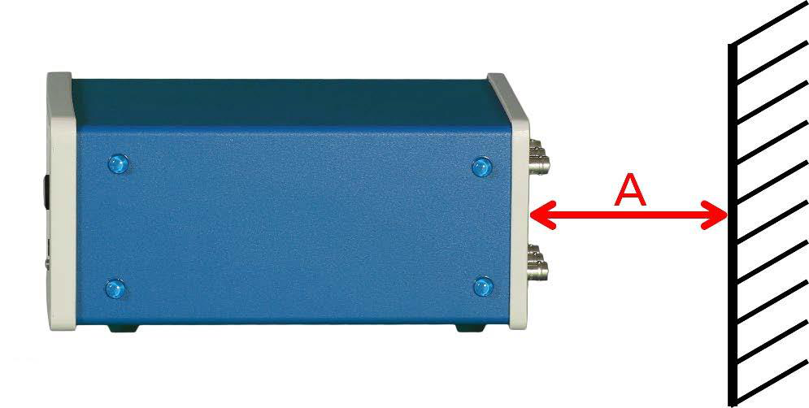
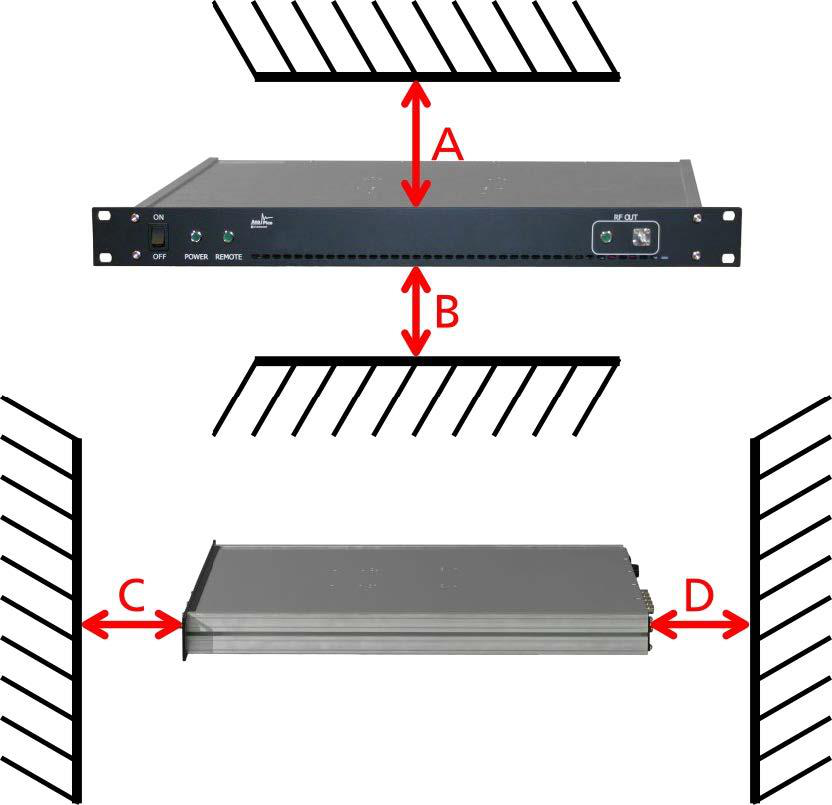
| Chassis | Minimum distances |
|---|---|
| COMPACT / BENCHTOP CHASSIS | A: 150 mm |
| 1U & 2U | A: 1 mm B: 1 mm C: 50 mm D: 50 mm |
Operating Conditions
Proper operation conditions
The devices are designed for use in dry and clean environents. The COMPACT / BENCHTOP CHASSIS can also be used in field as long as the operating conditions are met. Operation in an environment with high dust content, high humidity, danger of explosion or chemical vapors is prohibited.
In case of condensation 2 hours are to be allowed for drying prior to operation. Operation is only allowed from a 3-terminal mains connector with a safety ground connection and a mains plug used in your specific country.
For sufficient ventilation, ensure open ventilation holes.
Environmental Information
- Waste electrical and electronic equipment must not be disposed of with unsorted municipal waste, but must be collected separately. Contact the BNC customer service center for environmentally responsible disposal of the product.
- Specially marked equipment has a battery or accumulator that must not be disposed of with unsorted municipal waste, but must be collected separately. It may only be disposed of at a suitable collection point or via BNC service center.
6Getting Started
Included Material
Your signal generator kit contains the following items:
- Signal Generator
- Universal power adaptor (AC 100 – 240 V) with corresponding country specific plugs
- Ethernet cable
- Memory Stick with graphical user interface for Windows and documentation
System Requirements
The BNC graphical user interface requires at least the minimum system requirements to run one of the supported operating systems.
| Operating system | Windows™ 7, 8, 10, 11 |
| Remote | 10/100/1000M Ethernet or USB 2.0 Port |
Unpacking the Instrument
Remove the instrument materials from the shipping containers. Save the containers for future use. What is in the box:
- Model 875
- 24V DC Power Supply
- 3 Prong AC Plug
- LAN Cable
Initial Inspection
Inspect the shipping container for damage. If container is damaged, retain it until contents of the shipment have been verified against the packing list and instruments have been inspected for mechanical and electrical operation.
7Starting the Instrument
This section describes installation instructions and verification tests.
Applying Power
Place the instrument on the intended workbench and connect the appropriate DC power supply to the receptacle on the rear of the unit. Make sure you use the included DC power supply.
Press the line on/off switch on the rear panel. If available, the front panel display will illuminate. The instrument will initialize and momentarily diplay the model number, firmware revision and product serial number. The display will then switch to the factory default display setting, showing preset frequency and poewr, phase lock status (of internal reference) and instrument connectivity status (Ethernet IP or USB identifier).
Connecting to LAN
Connect the instrument to your local area network (LAN) using the Ethernet cable. By default, the instrument is configured to accept its dynamic IP number from the DHCP server of your network. If it is configured properly, your network router will assign a dynamic IP number to the instrument which will be automatically displayed on the screen. Your instrument is now ready to receive remote commands.
Direct connectivity to host via Ethernet cable (no router)
You can connect the instrument to your computer with the Ethernet cable without using a local are network with DHCP server. To work properly, the network controller (NIC) of your computer must be set to an IP address following the ZEROCONF standard, beginning with 169.254.xxx.xxx (excluding 169.254.1.0 and 169.254.254.255) and network mask 255.255.0.0 to match the ZEROCONF IP that the signal generator will assign itself after DHCP timeout. Any fixed address in the abovementioned range is admissible as well. The generators ZEROCONF address cannot be predicted as it is assigned dynamically, however the ZEROCONF address assignment process ensures it will not conflict with any other address used in the network.
Connection from a NIC that is configured to use DHCP is also possible. After a pre-set timeout, the NIC will assume that no DHCP is available and self-assign a fallback IP that will fall into the range 169.254.xxx.xxx. Alternatively, you may assign the instrument a fixed IP. Please refer to a later section of this manual to learn how to do this.
Connecting through USB
Connect the (powered on) instrument to the computer using a quality USB type-A to type-B cable. If properly connected, the computer host should automatically recognize your instrument as a USBTMC device.
Alternatively, a VISA runtime environment (NI, Keysight or comparable) must be installed. Use VISA Write to send the *IDN? Query and use VISA Read to get the response. The USBTMC protocol supports service request, triggers and other GPIB specific operations.
Connecting through GPIB
Connect the instrument to the GPIB controller using the rear panel GPIB connector (option GPIB is required). Once connected properly, use VISA Write to send the *IDN? query and use VISA Read to get the response. The protocol supports service request, triggers and other GPIB specific operations.
Installing the BNC Signal Generator Remote Client
BNC's graphical user interface provides an intuitive control of the instruments. It runs under Windows™ operating system with minimum requirements. To install the GUI on the computer, insert the BNC memory stick, double click on the setup.exe to run the auto-installer.
The self-extracting setup provides easy installation and de-installation of the software. The setup program guides you in a few steps though the installation process.
Troubleshooting the LAN Interconnection
Software does not install properly
- Make sure your memory stick is not damaged.
Software cannot detect any instrument
- Make sure you have connected both computer and instrument to a common network.
- If a direct connection is used you may require to reset your computer Ethernet controller (depending on the configuration). Note that in that case detection of the instrument can take a considerable amount of time if your computer is configured to work with an external DHCP server. In some cases the detection may even fail completely. Configure your computer network controller to an appropriate fixed IP instead.
- Make sure that your software firewall enables the GUI to setup a TCP/IP connection via the LAN. Under Windows 7/10 you can do that like this: Open Control Panel under Settings in your Start menu. Then go to Windows Firewall. Click on Exceptions and then add Program. If the GUI is in this list, choose it and click OK otherwise you have to browse for the path to GUI installation directory. Finally close all open dialogs with OK. Now your Windows™ Firewall will not block requests from the GUI.
Shutting Down the Signal Generator
Press the line on/off switch on the rear panel to off.
Replacing the Fuse
The 2U chassis has a fuse, accessible from the outside. To change the fuse, pull out the mains plug and pull the fuse holder out. Replace the old fuse with a new one. It is unsafe to repair burnt fuses or bridge two side by any means. Use only a new fuse with the same specifications.
8Using the Graphical User Interface (GUI)
BNC's graphical user interface provides an intuitive control of the signal generator. It runs under any Windows™ operating system. Make sure the software is installed correctly and the computer's firewall is configured properly.
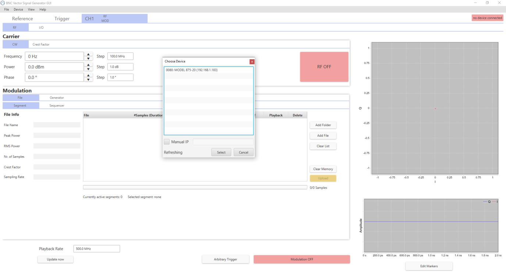
Launch Vector Signal Generator GUI
After successful installation of the sofware, double-click the sofware shortcut that has been created on your desktop.
After launching, the GUI will automatically detect existing BNC instruments that are connected to the computer (network) via local area network, USB, or GPIB. In the CONTROL tab, the detected instruments are listed. Clicking on one of the devices will instantly establish connection. Clicking on an alternate device will disconnect the old device and reconnect to the new device.
Simultaneously controlling Multiple Signal Generators from one PC
You can easily control multiple BNC instruments from a single computer but you need to start a separate GUI instances for every instrument as only one instrument is controlled by the GUI at once.
Setting Network Configuration
The Network Configuration button allows configuring the LAN settings as shown in Figure 8. You may choose from three distinct network addressing modes: setting to Auto will check for a DHCP server on the network, but if this fails, will fall back to assigning an address automatically using zeroconf. Setting to DHCP will check for a DHCP server on the network with no fallback option if one doesn't exist. Setting to manual will require the user to supply all network settings for the device manually below. Additionally, the device name can be modified as desired. The unit serial number and firmware revision are displayed at the bottom of the dialogue box.
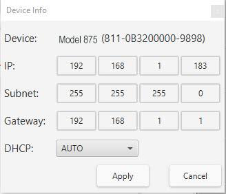
Multi-Session Option
The 'Multi-Session' checkbox can be selected to enable the device to be accessed from more than one instance of the UI. This enables users on multiple computers on the network to connect to and configure the device simultaneously. It is the user's responsibility to manage access conflicts whilst this mode is enabled (i.e. 2 users changing the same option from different PCs).
Device Port Setings
The 'Port' option allows the listing TCP port to be customized for the device. The default setting for all devices is port 18. If changed, the device will no longer be accessible using this port number. Any instances of the UI (or other VISA applications connecting to the device over a network) will need to modify their destination port number to match the device to connect to.
Connecting to devices using a non-defualt port
There are 2 options for connecting to a device when its default listening port has been changed.
1. Specify a temporary connection port
Click the menu 'Info' -> 'Connection Settings' -> 'Specify Connection Port'. This will cause a new setting 'Custom Port' to be displayed on the 'Control' tab of the UI (see figures 6-d and 6-e). The connection port to use can then be entered (within the range of permissible TCP port numbers). Beware that this setting will overwrite the default port until it is removed. To remove, select 'Specify Connection Port' again – this will remove the 'Custom Port' setting from the UI and revert to using the current default port. Deleting the port number from the 'Custom Port' text box will also cause the UI to revert to using the default port.
2. Change the application's default port setting
The global default port to use for connections can be changed by selecting menu 'Info' -> 'Connection Settings' -> 'Change Default Port' (see figure 6-d). A default port can be entered into the dialog box which appears and set by clicking button 'Set Default' – only permissible TCP ports can be entered here. If the new default port is accepted, the '[Default=]' text above will display the new setting. Beware that the new default setting will now persist until changed again – including after restarting the UI or rebooting your system.
Setting the GPIB Address
If the instrument has the GPIB option installed, the GPIB address can be changed in the GPIB submenu in the control tab. Valid GPIB addresses range from 1 to 30.
To verify GPIB functionality, use the VISA Assistant available with the Agilent IO Library or the Getting Started Wizard available with the National Instrument IO Library. These utility programs enable you to communicate with the signal generator and verify its operation over GPIB. For information and instructions on running these programs refer to the Help menu available in each utility.
Firmware Update
A firmware update of the instrument can be done directly via the GUI. First make sure you are connected to the right instrument and have the correct firmware binary file (.tar) ready. Then apply Controller -> Update Firmware and select the appropriate binary file that you have received from BNC or downloaded from the BNC download site. The update will take a few seconds to a minute and your instrument will reboot upon completio. You will need to reconnect to the instruments after booting is completed.
9Local Operation via Front Panel
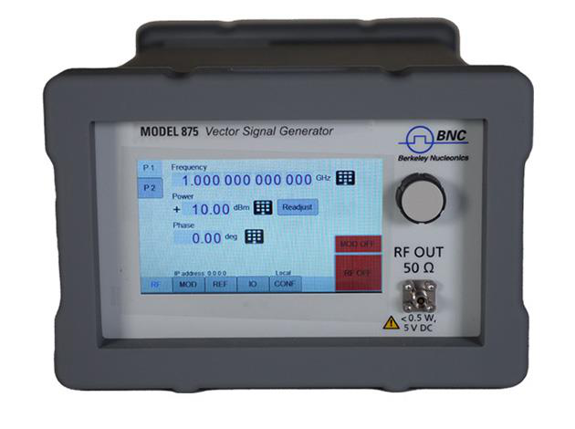
The currently active display position is shown by the cursor (underline symbol, or different background colour). The cursor does not move beyond the field of the currently selected parameter. Rotate the front panel knob to modify the value. Clockwise rotation increases the parameter and counter-clockwise rotation decreases the parameter. The parameter value will continue to increase or decrease by the amount of the selected resolution until it reaches the maximum or minimum limit of the parameter.
Displayed Parameters Formats
The following sections describe how to control the instrument via the front panel control by invoking various menu functions.
CW Display
The Main or CW Display is shown after the instrument has successfully booted and is ready.
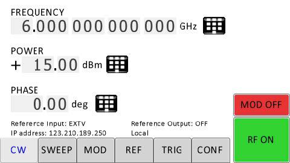
10Modulaton Submenus
Pulse Modulation Submenu
In the Pulse sub-menu the internal pulse modulator can be controlled.
Amplitude Modulation Submenu
In the Amplitude Mod submenu the internal amplitude modulation can be accessed.
Frequency Modulation Submenu
In the frequency modulation submenu the internal and external frequency modulation can be accessed.
Phase Modulation Submenu
In the phase modulation submenu the internal and external phase modulation can be accessed.
Reference Submenu
In the reference sub-menu the input and output for clock reference can be set.
Trigger Submenu
After accessing the Trigger menu, use the rotary knob to toggle the selected entry value or to change selected digit. The display shows up as following.
LAN Configuration Submenu
In the LAN Configuration menu, IP address, subnet mask and DHCP can be configured.
Display Settings Submenu
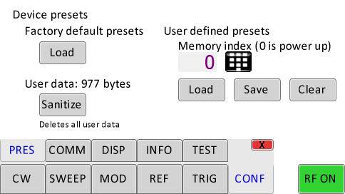
Help Submenu
This submenu provides basic information about the front panel menu control.
11Remote Programming the Signal Generator
The Model 875 can be remotely operated using commands sent from an external controller over Ethernet, USB, or GPIB. All interfaces use the standard SCPI command set to pass commands to the instrument. The material below folds in the Model 875 Programming Manual: the interface connection methods, the IEEE-488.2 common commands, and the full SCPI command reference.
Introduction
This reference covers remote operation of the Berkeley Nucleonics (BNC) Model 875 vector signal generators using commands sent from an external controller via Ethernet, USB, or GPIB. It includes a general description of the LAN and bus data transfer and control functions, how to establish a connection via LAN, USB, or GPIB, the IEEE-488 interface function messages recognized by the signal generator, and a complete listing of the SCPI commands used to control signal generator operation.
All instruments can be accessed through the LAN, USB, or GPIB interface. While LAN is the preferred interface for BNC instruments, GPIB is only optionally available for some models.
Ethernet LAN
All BNC signal generators are preferably remote-programmed via a 10/100/1000Base-T LAN interface and LAN-connected computer using one of several LAN interface protocols. The LAN allows instruments to be connected together and controlled by a LAN-based computer. LAN and its associated interface operations are defined in the IEEE 802.2 standard. The following LAN interface protocols are supported:
- Socket based LAN: the application programming interface (API) provided with the instrument supports general programming using the LAN interface under Windows operating system code.
- VXI-11: a TCP/IP instrument control protocol.
- Telephone Network (TELNET): TELNET is used for interactive, one command at a time instrument control.
- Internet protocol optionally supported.
For LAN operation, the AP Vector Signal Generator must be connected to the LAN, and an IP address must be assigned to the AP Vector Signal Generator either manually or by using DHCP client service. Your system administrator can tell you which method to use. Most current LAN networks use DHCP.
DHCP Configuration
If the DHCP server uses dynamic DNS to link the hostname with the assigned IP address, the hostname may be used in place of the IP address. Otherwise, the hostname is not usable.
Using Sockets LAN
Sockets LAN is a method used to communicate with the AP Vector Signal Generator over the LAN interface using the Transmission Control Protocol/Internet Protocol (TCP/IP). A socket is a fundamental technology used for computer networking and allows applications to communicate using standard mechanisms built into network hardware and operating systems. The method accesses a port on the signal generator/frequency synthesizer from which bidirectional communication with a network computer can be established. Sockets LAN can be accessed using the BNC API or with the standard Microsoft operating systems.
Using and Configuring VXI-11 (VISA)
The AP Vector Signal Generator supports the LAN interface protocol described in the VXI-11 standard. VXI-11 is an instrument control protocol based on Open Network Computing/Remote Procedure Call (ONC/RPC) interfaces running over TCP/IP. A range of standard software such as NI-VISA or BNC IO Config is available to set up the computer-signal generator interface for the VXI-11 protocol. VISA is an IO library used to develop IO applications and instrument drivers that comply with industry standards. It is recommended to use the VISA library for programming the signal generators/frequency synthesizers. The NI-VISA and Agilent VISA libraries are similar implementations of VISA and have the same commands, syntax, and functions.
Using Telnet LAN (Port 18)
Telnet provides a means of communicating with the AP Vector Signal Generator over the LAN. The Telnet client, run on a LAN-connected computer, will create a session on the AP Vector Signal Generator. A connection, established between computer and AP Vector Signal Generator, generates a command line user interface. Using the Telnet protocol to send commands to the AP Vector Signal Generator is similar to communicating with the AP Vector Signal Generator over LAN. You establish a connection with the AP Vector Signal Generator and send or receive information using predefined commands. Communication is interactive: one command at a time. The Telnet service is available on port 18.
USB (USBTMC)
All instruments support the following USB interface protocols:
- USBTMC class device via VISA: USBTMC stands for USB Test & Measurement Class. USBTMC is a protocol built on top of USB that allows GPIB-like communication with USB devices. From the user's point of view, the USB device behaves just like a GPIB device. USBTMC allows instrument manufacturers to upgrade the physical layer from GPIB to USB while maintaining software compatibility with existing software such as instrument drivers and applications that uses VISA. This is also what the VXI-11 protocol provides for TCP/IP.
- USBTMC with IVI drivers: the application programming interface (API) provided with the instrument supports general programming using the USB interface under Windows operating system using the IVI drivers.
USB-TMC Interface Connection and Setup using VISA
USBTMC stands for USB Test & Measurement Class. USBTMC is a protocol built on top of USB that allows GPIB-like communication with USB devices. From the user's point of view, the USB device behaves just like a GPIB device. For example, you can use VISA Write to send the *IDN? query and use VISA Read to get the response. The USBTMC protocol supports service request, triggers and other GPIB specific operations. USBTMC upgrades the physical layer from GPIB to USB while maintaining software compatibility with existing software such as instrument drivers and any application that uses VISA. NI-VISA 3.0 or later allows you to communicate as a controller to the instruments. NI-VISA is configured to detect USBTMC compliant instruments. To use such a device, plug it in and Windows should detect the new hardware and launch the Hardware Wizard. Instruct the wizard to search for the driver, which in this case is NI-VISA. If NI-VISA is properly installed, the device will be installed as a USB Test & Measurement Class device. Open Measurement & Automation Explorer (MAX). The new device will appear in MAX under Devices and Interfaces > USB Devices. You can then use this resource name as you would use any GPIB resource.
USB-TMC Interface Connection and Setup using BNC API
BNC API programming interface supports direct communication to instruments using BNC's proprietary DLL driver libraries. Please contact BNC for more detailed documentation, programming samples, and updates on the DLL library.
GPIB Interface Connection and Setup
General GPIB information
GPIB (General Purpose Interface Bus) is an interface standard for connecting computers and peripherals, which supports the following international standards: IEEE 488.1, IEC-625, IEEE 488.2, and JIS-C1901. The GPIB interface allows you to control the instrument from an external computer. The computer sends commands and instructions to the instrument and receives data sent from the instrument via GPIB.
- Up to 15 instruments can be connected in a single GPIB system.
- Cable length: the length of cables to connect between instruments must be 4 m or less. The total length of connecting cables in a single GPIB system must be 2 m × the number of connected instruments (including the controller) or less. You cannot construct the system in which the total cable length exceeds 20 m.
- Connectors: the number of connectors connected to an individual instrument must be 4 or less. If you connect 5 or more connectors, excessive force is applied to the connector part, which may result in failure.
- Topology: you can choose the instrument connection topology from star, linear, and combined. Loop connection is not allowed.
SCPI Commands
The Standard Commands for Programmable Instrumentation (SCPI) provides a uniform and consistent language to control programmable test and measurement instruments in instrumentation systems. The SCPI Standard is built on the foundation of IEEE-488.2, Standard Codes and Formats. It requires conformance to IEEE-488.2, but is a pure software standard. SCPI syntax is ASCII text, and therefore can be attached to any computer test language such as BASIC, C, or C++. It can also be used with Test Application Environments such as LabWindows/CVI, LabVIEW, or Matlab. SCPI is hardware independent. SCPI strings can be sent over any instrument interface. It works equally well over USB-TMC, GPIB, RS-232, VXIbus or LAN networks.
IEEE-488 Interface Commands
Definite Length Block Data
The definite block data format transfers arbitrary byte data. It is used to transfer files (text and binary). A definite block is prefixed by a # character, indicating the beginning of block data. A definite block has a #<ndigits><nbytes><data><data> format, where:
#marks the beginning of block data.<ndigits>specifies how many decimal digits are contained in<nbytes>.<ndigits>is a decimal integer.<nbytes>specifies how many<data>bytes follow.<nbytes>is a decimal integer.<data>are the data bytes transferred.
Example of definite block data:
#214100000000001;1.0#214: beginning of block data#214: byte count is two digits wide#214: 14 data bytes will follow...100000000001;1.0: 14 bytes of data (file contents)
IEEE-488.2 Common Commands
The required common commands are IEEE-488.2 mandated commands that are defined in the IEEE-488.2 standard and must be implemented by all SCPI compatible instruments. These commands are identified by an asterisk (*) at the beginning of the command keyword. These commands are used to control instrument status registers, status reporting, synchronization, and other common functions.
| Command | Parameter / Range | Description |
|---|---|---|
*CLS | Clear Status Command. Clears the status byte by emptying the error queue and clearing all the event registers including the Data Questionable Event Register, the Standard Event Status Register, the Operation Status Register, and any other registers that are summarized in the status byte. | |
*ESE <data> | 0–255 | Standard Event Status Enable Command. Sets the Standard Event Status Enable Register. The variable <data> represents the sum of the bits that will be enabled. The setting enabled by this command is not affected by *RST. The default value is restored if the setting is zero. |
*ESE? | 0–255 | Standard Event Status Enable Query. Returns the value of the Standard Event Status Enable Register. |
*ESR? | Standard Event Status Register Query. Returns the value of the Standard Event Status Register. | |
*IDN? | Identification (IDN) query outputs an identifying string. The response shows the following information: <company name>, <model number>, <serial number>, <firmware revision>. | |
*OPC | Operation Complete (OPC) command sets bit 0 in the Standard Event Status Register when all pending operations have finished. | |
*OPC? | Operation Complete query returns the ASCII character 1 in the Standard Event Status Register when all pending operations have finished. This query stops any new commands from being processed until the current processing is complete. This command blocks the communication until all operations are complete (i.e. the timeout setting should be longer than the longest sweep). | |
*OPT? | Options (OPT) query returns a comma-separated list of all currently installed instrument options on the AP Vector Signal Generator. Common returned option strings are: 520 Basic device; 004 Number of channels of the device; UN2 Fast Switching; GPB GPIB (IEEE 488) programming interface. Further options are available for different AP Vector Signal Generator models. Refer to the Data Sheet for a complete list of options supported by a particular instrument. | |
*RCL <reg> | <reg> | The Recall (RCL) command recalls the state from the specified memory register <reg>. |
*RST | The Reset (RST) command resets most AP Vector Signal Generator functions to factory-defined conditions. Each command shows the [*RST] default value if the setting is affected. | |
*SAV <reg> | <reg> | The Save (SAV) command saves AP Vector Signal Generator settings to the specified memory register <reg>. Refer to the User's Guide for more information on the save function. |
*SRE <data> | 0–255 | The Service Request Enable (SRE) command sets the value of the Service Request Enable Register. The variable <data> is the decimal sum of the bits that will be enabled. Bit 6 (value 64) is ignored and cannot be set by this command. The setting enabled by this command is not affected by *RST. However, cycling the instrument's power will reset it to zero. |
*SRE? | 0–255 | The Service Request Enable (SRE) query returns the value of the Service Request Enable Register. |
*STB? | 0–255 | The Read Status Byte (STB) query returns the value of the status byte including the master summary status (MSS) bit. |
*TRG | The Trigger (TRG) command triggers the instrument if bus trigger is the selected trigger source, otherwise *TRG is ignored. | |
*TST? | 0 | 1 | The Self-Test (TST) query initiates the internal self-test and returns one of the following results: 0 indicates all tests passed; 1 indicates that one or more tests failed. |
*WAI | The Wait-to-Continue (WAI) command causes the AP Vector Signal Generator to wait until all pending commands are completed, before executing any other commands. |
SCPI Command Reference
The complete SCPI command tree for the Model 875 is documented below, organized by subsystem. Each subsystem keyword is a parent header row; child commands are indented one level beneath it. The Keyword column shows the command path, Parameter Range shows the accepted values (with [*RST] defaults where applicable), and Notes carries the command description verbatim from the Programming Manual.
ABORt Subsystem
The :ABORt command, along with :TRIGger and :INITiate, comprises the Trigger group. It causes the List or Step sweep in progress to abort. Even if INIT:CONT[:ALL] is set to ON, the sweep will not immediately re-initiate.
| Command | Parameters | Unit | Default |
|---|---|---|---|
:ABORt |
CALibration Subsystem
APPLy: ON|1 applies the self-adjusted calibration table (up to 1 minute); OFF|0 applies the factory calibration. GENerate: ON|1 performs a self adjustment, overwriting any existing one (up to 5 minutes); OFF|0 deletes the previously generated self-adjustment table from non-volatile memory. The GENerate? query returns 1 if a self adjustment is available.
| Command | Parameters | Unit | Default |
|---|---|---|---|
:CALibration:SELF:APPLy | ON|OFF|1|0 | 1 if self adjustment run previously, else 0 | |
:CALibration:SELF:GENerate | ON|OFF|1|0 | 1 if self adjustment run previously, else 0 |
DISPlay Subsystem
Configures the front panel display. When disabled, the display shows no instrument information and cannot be re-enabled from the front panel: only remote control or a power cycle restores it. Use it to hide confidential settings. See :SYSTem:LOCK to lock the front panel without hiding settings.
| Command | Parameters | Unit | Default |
|---|---|---|---|
:DISPlay:ENABle | ON|OFF|1|0 | ON |
INITiate Subsystem
Part of the Trigger group. CONTinuous, when enabled, continuously rearms the trigger system after a triggered sweep. [:IMMediate] sets the trigger to the armed state.
| Command | Parameters | Unit | Default |
|---|---|---|---|
:INITiate:CONTinuous | ON|OFF|1|0 | ON | |
:INITiate[:IMMediate] |
MEMory Subsystem
Deletes stored files. Additional :MEMory:FILE:CORRection commands are documented under the CORRection subsystem.
| Command | Parameters | Unit | Default |
|---|---|---|---|
:MEMory:FILE:DELete:ALL |
MMEMory Subsystem
Mass-memory file operations. Supported waveform file formats are .qid and .wfm.
| Command | Parameters | Unit | Default |
|---|---|---|---|
:MMEMory:CATalog? | |||
:MMEMory:COPY | "src","dst" | ||
:MMEMory:DATA | "path",<data> | ||
:MMEMory:DATA? | "path" | ||
:MMEMory:LOAD | "path"[<segment_id>] | ||
:MMEMory:MOVE | "src file","dst file" |
OUTPut Subsystem
Commands applying to a single channel use the <ch> field; commands common to all channels have no <ch>. <ch> ranges from 1 to the number of channels; if omitted, the currently selected default channel is targeted. BLANking ON turns the RF output off (blanks it) during frequency changes.
| Command | Parameters | Unit | Default |
|---|---|---|---|
OUTPut<ch>:BLANking[:STATe] | ON|OFF|1|0 | device dependent | |
OUTPut<ch>[:STATe] | ON|OFF|1|0 | OFF |
[:SOURce<ch>] Subsystem
Selects the active source.
| Command | Parameters | Unit | Default |
|---|---|---|---|
[:SOURce]:SELect | <integer> | 1 |
[:SOURce<ch>]:AIN Subsystem
Analog input (I/Q) configuration, gain, offset, overload and over-range monitoring.
| Command | Parameters | Unit | Default |
|---|---|---|---|
[:SOURce<ch>]:AIN<index>:CALibrate:ZERO | |||
[:SOURce<ch>]:AIN<index>:GAIN | <float> | ||
[:SOURce<ch>]:AIN<index>:OFFSet | <float> | V | 0 V |
[:SOURce<ch>]:AIN:OLOad:HOLD:RESet | |||
[:SOURce<ch>]:AIN<index>:OLOad:HOLD:STATe? | |||
[:SOURce<ch>]:AIN<index>:OLOad:STATe? | |||
[:SOURce<ch>]:AIN:OVRange:HOLD:RESet | |||
[:SOURce<ch>]:AIN<index>:OVRange:HOLD:STATe? | |||
[:SOURce<ch>]:AIN<index>:OVRange:STATe? | |||
[:SOURce<ch>]:AIN<index>:SOURce | QIN|IIN | QIN | |
[:SOURce<ch>]:AIN<index>:VOLTage? | MIN|MAX | V | |
[:SOURce<ch>]:AIN[:STATe] | ON|OFF|1|0 | OFF |
[:SOURce<ch>]:AM Subsystem (Amplitude Modulation)
AM:DEPTh sets the amplitude modulation depth and is used when AM:SOURce is INTernal.
| Command | Parameters | Unit | Default |
|---|---|---|---|
[:SOURce<ch>]:AM:DEPTh | <float> | 1|PCT | 0.8 |
[:SOURce<ch>]:AM:EXTernal:SOURce | AIN<ch> | AIN1 | |
[:SOURce<ch>]:AM:INTernal:FREQuency | <float> | Hz | 400 Hz |
[:SOURce<ch>]:AM:INTernal:SHAPe | SINE|SQUare|TRIangle | SINE | |
[:SOURce<ch>]:AM:SENSitivity | <float> | V⁻¹ | 0.8 V⁻¹ |
[:SOURce<ch>]:AM:SOURce | INTernal|EXTernal | INTernal | |
[:SOURce<ch>]:AM:STATe | ON|OFF|1|0 | OFF |
[:SOURce<ch>]:BB Subsystem (Baseband)
Baseband generation: top-level avionics/general routing, arbitrary waveform playback, trigger control, analog I/Q and Fast Control Port (FCP) input, additive white Gaussian noise, and internal digital (vector) modulation. The BB:AVIO:DME|ILS|VOR and BB:GENeral:AM|FM|PM commands follow the syntax of the corresponding :DME / :ILS / :VOR / :AM / :FM / :PM commands.
| Command | Parameters | Unit | Default |
|---|---|---|---|
[:SOURce<ch>]:BB:AVIO:DME | |||
[:SOURce<ch>]:BB:AVIO:ILS | |||
[:SOURce<ch>]:BB:AVIO:VOR | |||
[:SOURce<ch>]:BB:GENeral:AM | |||
[:SOURce<ch>]:BB:GENeral:FM | |||
[:SOURce<ch>]:BB:GENeral:PM | |||
[:SOURce<ch>]:BB:ARBitrary:CLOCk | <float> | Hz | 500 MHz |
[:SOURce<ch>]:BB:ARBitrary:CLOCk:ADJust | ON|OFF|1|0 | OFF | |
[:SOURce<ch>]:BB:ARBitrary:DELay:MODE | BB|RF | RF | |
[:SOURce<ch>]:BB:ARBitrary:DELay:RELative | <float> | s | 0 s |
[:SOURce<ch>]:BB:ARBitrary:MODE | BLANk|CW|CIQ|NORMal|RETRace | BLANk | |
[:SOURce<ch>]:BB:ARBitrary:WAVeform:CLOCk | <float> | Hz | 500 MHz |
[:SOURce<ch>]:BB:ARBitrary:WAVeform:DATA | [<integer>]<data>|"filename" | ||
[:SOURce<ch>]:BB:ARBitrary:WAVeform:DATA:EXTended | <integer>,[<integer>],<data> | ||
[:SOURce<ch>]:BB:ARBitrary:WAVeform:DATA:FREE? | |||
[:SOURce<ch>]:BB:ARBitrary:WAVeform:DATA:DELete | ALL | ||
[:SOURce<ch>]:BB:ARBitrary:WAVeform:FILE:DELete | "string" | ||
[:SOURce<ch>]:BB:ARBitrary:WAVeform:FILE:FREE? | |||
[:SOURce<ch>]:BB:ARBitrary:WAVeform:FILE:LIST? | |||
[:SOURce<ch>]:BB:ARBitrary:WAVeform:MARKer:COUNt? | |||
[:SOURce<ch>]:BB:ARBitrary:WAVeform:MARKer:STATe | ON|OFF|1|0 | OFF | |
[:SOURce<ch>]:BB:ARBitrary:WAVeform:META | #<integer><integer><data> | ||
[:SOURce<ch>]:BB:ARBitrary:WAVeform:STATe | ON|OFF|1|0 | OFF | |
[:SOURce<ch>]:BB:ARBitrary:WSEGment | <integer>|"filename" | 0 | |
[:SOURce<ch>]:BB:ARBitrary:WSEGment:COUNt? | [MAX] | ||
[:SOURce<ch>]:BB:ARBitrary:WSEGment:MODE | SEAMless|IMMediate | SEAMless | |
[:SOURce<ch>]:BB:ARBitrary:WSEGment:SOURce | INTernal|FCPort|SEQuence|MF | INTernal | |
[:SOURce<ch>]:BB:ARBitrary:WSEGment:MF<index>:INPut:SLOPe | POSitive|NEGative | POSitive | |
[:SOURce<ch>]:BB:ARBitrary:WSEGment:MF<index>:INPut:STATe | ON|OFF|1|0 | OFF | |
[:SOURce<ch>]:BB:ARBitrary:WSEGment:MF<index>:INPut:WSEGment | <integer> | 0 | |
[:SOURce<ch>]:BB:ARBitrary:WSEQuence:LOAD | <integer>,<integer>,<integer> | ||
[:SOURce<ch>]:BB:ARBitrary:WSEQuence:LOAD:ERRor? | |||
[:SOURce<ch>]:BB:ARBitrary:WSEQuence:RUN | 0|1 | 0 | |
[:SOURce<ch>]:BB:ARBitrary:TRIG[:SEQuence]:ABORt | |||
[:SOURce<ch>]:BB:ARBitrary:TRIG[:SEQuence]:DELay | <float> | s | 0 s |
[:SOURce<ch>]:BB:ARBitrary:TRIG[:SEQuence]:EXTernal:DELay | <float> | s | 0 s |
[:SOURce<ch>]:BB:ARBitrary:TRIG[:SEQuence]:EXTernal:SLOPe | POSitive|NEGative | POSitive | |
[:SOURce<ch>]:BB:ARBitrary:TRIG[:SEQuence]:EXTernal:SOURce | MF1|MF2 | MF1 | |
[:SOURce<ch>]:BB:ARBitrary:TRIG[:SEQuence][:IMMediate] | |||
[:SOURce<ch>]:BB:ARBitrary:AIQ:CLOCk? | Hz | ||
[:SOURce<ch>]:BB:ARBitrary:AIQ:SOURce:I | 1|2 | 1 | |
[:SOURce<ch>]:BB:ARBitrary:AIQ:SOURce:Q | 1|2 | 2 | |
[:SOURce<ch>]:BB:ARBitrary:AIQ[:STATe] | ON|OFF|1|0 | OFF | |
[:SOURce<ch>]:BB:ARBitrary:FCPort:CLOCk | <float> | Hz | 125 MHz |
[:SOURce<ch>]:BB:ARBitrary:FCPort[:STATe] | ON|OFF|1|0 | OFF | |
[:SOURce<ch>]:BB:AWGN:BANDwidth | <float> | Hz | 400 MHz |
[:SOURce<ch>]:BB:AWGN:CNR | <float> | dB | 25 dB |
[:SOURce<ch>]:BB:AWGN:MODE | CARRier|NOISe|SUM | CARRier | |
[:SOURce<ch>]:BB:AWGN:POWer:CARRier | <float> | dBm | |
[:SOURce<ch>]:BB:AWGN:POWer:CONTrol | TOTal|CARRier|NOISe | TOTal | |
[:SOURce<ch>]:BB:AWGN:POWer:NOISe | <float> | dBm | |
[:SOURce<ch>]:BB:AWGN[:STATe] | ON|OFF|1|0 | OFF | |
[:SOURce<ch>]:BB:DM:CLOCk? | Hz | ||
[:SOURce<ch>]:BB:DM:FILTer:PARameter | <float> | 0.5 | |
[:SOURce<ch>]:BB:DM:FILTer:TAPS | <float>{,<float>} | COSine|RCOSine|RECTangle|RASymmetric|DIRac|GAUSs | COSine | |
[:SOURce<ch>]:BB:DM:FORMat | QAM8|QAM16|QAM32|QAM64|QAM128|QAM256|QAM512|QAM1024|QAM2048|QAM4096 | QAM64 | |
[:SOURce<ch>]:BB:DM:OSAMpling | <integer> | 8 | |
[:SOURce<ch>]:BB:DM:PATTern:LENGth | <integer> | 4096 | |
[:SOURce<ch>]:BB:DM:SRATe | <float> | S/s | 200 MS/s |
[:SOURce<ch>]:BB:DM:STATe | ON|OFF|1|0 | OFF |
[:SOURce]:CORRection Subsystem
Flatness and phase correction. FLATness:MODE INTerpolation performs linear interpolation between the two pairs closest to the output frequency. Phase correction tables are loaded on power up; power cycle the instrument after uploading a new table.
| Command | Parameters | Unit | Default |
|---|---|---|---|
[:SOURce]:CORRection:FLATness:MODE | LOWer|HIGHer|INTerpolation | INTerpolation | |
[:SOURce]:CORRection:FLATness:PAIR | <float>,<float> | Hz, dBm | 0 Hz, 0 dBm |
[:SOURce]:CORRection:FLATness:PAIR? | <integer> | ||
[:SOURce]:CORRection:FLATness:POINts? | |||
[:SOURce]:CORRection:FLATness:PRESet | |||
[:SOURce]:CORRection:FLATness[:STATe] | ON|OFF|1|0 | OFF | |
[:SOURce]:CORRection:PHASe:COMMit | |||
[:SOURce]:CORRection:PHASe[:STATe] | ON|OFF|1|0 | unchanged | |
:MEMory:FILE:CORRection:FLATness:DATA | "filename",<data> | ||
:MEMory:FILE:CORRection:FLATness:DATA? | "filename" | ||
:MEMory:FILE:CORRection:FLATness:PEEK? | "filename" | ||
:MEMory:FILE:CORRection:FLATness:STORe | "filename" | ||
:MEMory:FILE:CORRection:PHASe:DATA | "filename",<data> | ||
:MEMory:FILE:CORRection:PHASe:DEL | "filename"|ALL | ||
:MEMory:FILE:CORRection:PHASe:LOAD | "filename" |
[:SOURce<ch>]:DME Subsystem
Distance Measuring Equipment (DME) avionics signal generation. Parameter ranges generally follow the Data Sheet.
| Command | Parameters | Unit | Default |
|---|---|---|---|
[:SOURce<ch>]:DME:APULse:ATTenuation | <float> | 0 | |
[:SOURce<ch>]:DME:APULse:DELay | <float> | s | 50 µs |
[:SOURce<ch>]:DME:APULse:PFALl | <float> | s | 2 µs |
[:SOURce<ch>]:DME:APULse:PRISe | <float> | s | 2 µs |
[:SOURce<ch>]:DME:APULse:PSELect | <integer> | 0 | |
[:SOURce<ch>]:DME:APULse:PSPacing | <float> | s | 12 µs |
[:SOURce<ch>]:DME:APULse:PTYPe | SINGle|DOUBle | DOUBle | |
[:SOURce<ch>]:DME:APULse:PWIDth | <float> | s | 12 µs |
[:SOURce<ch>]:DME:APULse:STATe | ON|OFF|1|0 | OFF | |
[:SOURce<ch>]:DME:DEADtime:DELay | <float> | s | 10 µs |
[:SOURce<ch>]:DME:DEADtime:STATe | ON|OFF|1|0 | OFF | |
[:SOURce<ch>]:DME:DEFault | |||
[:SOURce<ch>]:DME:ECHO:ATTenuation | <float> | 0 | |
[:SOURce<ch>]:DME:ECHO:DELay | <float> | s | 8 µs |
[:SOURce<ch>]:DME:ECHO:STATe | ON|OFF|1|0 | OFF | |
[:SOURce<ch>]:DME:FILTer | LINear|GAUSs|RCOS|COS|COS2 | LINear | |
[:SOURce<ch>]:DME:FREQuency | <float> | Hz | 1 kHz |
[:SOURce<ch>]:DME:IDENt | "string" | ||
[:SOURce<ch>]:DME:IDENt:DOT | <float> | s | 0.1 s |
[:SOURce<ch>]:DME:IDENt:PERiod | <float> | s | 30 s |
[:SOURce<ch>]:DME:IDENt:STATe | ON|OFF|1|0 | OFF | |
[:SOURce<ch>]:DME:INTerference:ATTenuation | <float> | 0 | |
[:SOURce<ch>]:DME:INTerference:DELay | <float> | s | 8 µs |
[:SOURce<ch>]:DME:INTerference:STATe | ON|OFF|1|0 | OFF | |
[:SOURce<ch>]:DME:TRIGger:OUT:STATe | ON|OFF|1|0 | OFF |
[:SOURce<ch>]:FCPort Subsystem
Fast Control Port (FCP) streaming control. To enable streaming, the baseband subsystem must also be configured for FCP IQ data streaming.
| Command | Parameters | Unit | Default |
|---|---|---|---|
[:SOURce<ch>]:FCPort:DIAgnostic? | |||
[:SOURce<ch>]:FCPort:STReam:CALibrate | |||
[:SOURce<ch>]:FCPort:STReam:IQ | ON|OFF|1|0 | OFF | |
[:SOURce<ch>]:FCPort:STReam:IQ:LOCKed? | |||
[:SOURce<ch>]:FCPort:STReam:SEGment | ON|OFF|1|0 | OFF | |
[:SOURce<ch>]:FCPort:TEST[:STATe] | ON|OFF|1|0 | OFF |
[:SOURce<ch>]:FM Subsystem (Frequency Modulation)
| Command | Parameters | Unit | Default |
|---|---|---|---|
[:SOURce<ch>]:FM:COUPling | AC|DC | AC | |
[:SOURce<ch>]:FM:DEViation | <float> | Hz | 1000 Hz |
[:SOURce<ch>]:FM:EXTernal:SOURce | AIN<ch> | AIN1 | |
[:SOURce<ch>]:FM:INTernal:FREQuency | <float> | Hz | 400 Hz |
[:SOURce<ch>]:FM:INTernal:SHAPe | RD|RU|SINE|SQUare|TRIangle | SINE | |
[:SOURce<ch>]:FM:SENSitivity | <float> | Hz/V | 1000 Hz/V |
[:SOURce<ch>]:FM:SOURce | INTernal|EXTernal | EXTernal | |
[:SOURce<ch>]:FM:STATe | ON|OFF|1|0 | OFF |
[:SOURce<ch>]:FREQuency Subsystem
MODE FIXed or CW selects fixed-frequency operation and stops an active frequency sweep.
| Command | Parameters | Unit | Default |
|---|---|---|---|
[:SOURce<ch>]:FREQuency:CENTer | <float> | Hz | 1.5 GHz |
[:SOURce<ch>]:FREQuency[:FIXed|CW] | <float> | Hz | 100 MHz / 1 GHz |
[:SOURce<ch>]:FREQuency:MODE | FIXed|CW|SWEep|LIST|CHIRp | FIXed | |
[:SOURce<ch>]:FREQuency:SPAN | <float> | Hz | 1 GHz |
[:SOURce<ch>]:FREQuency:STARt | <float> | Hz | 1 GHz |
[:SOURce<ch>]:FREQuency:STEP | <float> | Hz | 1 GHz |
[:SOURce<ch>]:FREQuency:STOP | <float> | Hz | 2 GHz |
[:SOURce<ch>]:ILS Subsystem
Instrument Landing System (ILS) avionics: Glide Slope (GS) and Localizer beams.
| Command | Parameters | Unit | Default |
|---|---|---|---|
[:SOURce<ch>]:ILS:GS:AM0[:DEPTh] | <float> | 1|PCT | 0.4 |
[:SOURce<ch>]:ILS:GS:AM0:FREQuency | <float> | Hz | 90 Hz |
[:SOURce<ch>]:ILS:GS:AM0:STATe | ON|OFF|1|0 | ON | |
[:SOURce<ch>]:ILS:GS:AM1[:DEPTh] | <float> | 1|PCT | 0.4 |
[:SOURce<ch>]:ILS:GS:AM1:FREQuency | <float> | Hz | 150 Hz |
[:SOURce<ch>]:ILS:GS:AM1:STATe | ON|OFF|1|0 | ON | |
[:SOURce<ch>]:ILS:GS:DDM | <float> | A | 0 A |
[:SOURce<ch>]:ILS:GS:DDM:POLarity | NORMal|INVerted | NORMal | |
[:SOURce<ch>]:ILS:GS:DEFault | |||
[:SOURce<ch>]:ILS:GS:SDM | <float> | 1|PCT | 0.8 |
[:SOURce<ch>]:ILS:GS[:STATe] | ON|OFF|1|0 | OFF | |
[:SOURce<ch>]:ILS:GS:TEST | DDM0|UP|DOWN|FLAG | ||
[:SOURce<ch>]:ILS:LOCalizer:AM0[:DEPTh] | <float> | 1|PCT | 0.2 |
[:SOURce<ch>]:ILS:LOCalizer:AM0:FREQuency | <float> | Hz | 90 Hz |
[:SOURce<ch>]:ILS:LOCalizer:AM0:STATe | ON|OFF|1|0 | OFF | |
[:SOURce<ch>]:ILS:LOCalizer:AM1[:DEPTh] | <float> | 1|PCT | 0.2 |
[:SOURce<ch>]:ILS:LOCalizer:AM1:FREQuency | <float> | Hz | 150 Hz |
[:SOURce<ch>]:ILS:LOCalizer:AM1:PHASe | <float> | rad|deg | 0 rad |
[:SOURce<ch>]:ILS:LOCalizer:AM1:STATe | ON|OFF|1|0 | OFF | |
[:SOURce<ch>]:ILS:LOCalizer:DDM | <float> | A | 0 A |
[:SOURce<ch>]:ILS:LOCalizer:DDM:POLarity | NORMal|INVerted | NORMal | |
[:SOURce<ch>]:ILS:LOCalizer:DEFault | |||
[:SOURce<ch>]:ILS:LOCalizer:IDEN | "string" | "ANAP" | |
[:SOURce<ch>]:ILS:LOCalizer:IDEN:DEPTh | <float> | 1|PCT | 0.1 |
[:SOURce<ch>]:ILS:LOCalizer:IDEN:FREQuency | <float> | Hz | 1020 Hz |
[:SOURce<ch>]:ILS:LOCalizer:SDM? |
[:SOURce<ch>]:IQ Subsystem
Crest-factor reporting and I/Q state.
| Command | Parameters | Unit | Default |
|---|---|---|---|
[:SOURce<ch>]:IQ:CRESt:AUTOmatic? | dB | ||
[:SOURce<ch>]:IQ:CRESt:AWGN? | dB | ||
[:SOURce<ch>]:IQ:CRESt:MANual | <float> | dB | 0 dB |
[:SOURce<ch>]:IQ:CRESt:TOTal? | dB | ||
[:SOURce<ch>]:IQ:STATe | ON|OFF|1|0 | ON |
[:SOURce<ch>]:MF Subsystem
Multifunction (MF) input/output configuration.
| Command | Parameters | Unit | Default |
|---|---|---|---|
[:SOURce<ch>]:MF:COUNt? | |||
[:SOURce<ch>]:MF<index>:INPut:STATe? | |||
[:SOURce<ch>]:MF<index>:OUTPut:ARBitrary:SOURce | MARKer|TRIGger | MARKer | |
[:SOURce<ch>]:MF<index>:OUTPut:MARKer:SOURce | <integer> | 1 | |
[:SOURce<ch>]:MF<index>:OUTPut:PULModulation:SOURce | VIDeo|TRIGger | VIDeo | |
[:SOURce<ch>]:MF<index>:OUTPut:SOURce | LOW|HIGH|PULModulation|ARBitrary | LOW | |
[:SOURce<ch>]:MF<index>:OUTPut:STATe | ON|OFF|1|0 | OFF | |
[:SOURce<ch>]:MF<index>:OUTPut:SWEep:SOURce | VALid|TRIGger | VALid |
[:SOURce<ch>]:PHASe Subsystem
Disabling phase memory (phase-coherent switching) improves frequency switching speed.
| Command | Parameters | Unit | Default |
|---|---|---|---|
[:SOURce<ch>]:PHASe[:ADJust] | <float> | rad|deg | 0 rad |
[:SOURce<ch>]:PHASe:MEMory:RESTart | |||
[:SOURce<ch>]:PHASe:MEMory:STATe | ON|OFF|1|0 | ON | |
[:SOURce<ch>]:PHASe:MODE | FIXed|CW|SWEep|LIST | FIXed | |
[:SOURce<ch>]:PHASe:PCM:COMMit | |||
[:SOURce<ch>]:PHASe:PCM:FREQuency:REFerence:LIST? | |||
[:SOURce<ch>]:PHASe:PCM:POWer:REFerence:LIST? | |||
[:SOURce<ch>]:PHASe:PCM[:STATe] | ON|OFF|1|0 | unchanged | |
[:SOURce<ch>]:PHASe:STARt | <float> | rad|deg | 0 rad |
[:SOURce<ch>]:PHASe:STEP? | rad | ||
[:SOURce<ch>]:PHASe:STOP | <float> | rad|deg | 6.28 rad |
[:SOURce<ch>]:POWer Subsystem
RF output power, automatic level control (ALC), and attenuation.
| Command | Parameters | Unit | Default |
|---|---|---|---|
[:SOURce<ch>]:POWer:ALC:HOLD | ON|OFF|1|0 | ||
[:SOURce<ch>]:POWer:ALC:HOLD:AUTO | ON|OFF|1|0 | ON | |
[:SOURce<ch>]:POWer:ALC:SEARch | ON|OFF|1|0|ONCE | ON | |
[:SOURce<ch>]:POWer:ALC[:STATe] | ON|OFF|1|0 | ON | |
[:SOURce<ch>]:POWer:ATTenuation | <float> | dB | 0 dB |
[:SOURce<ch>]:POWer:ATTenuation:AUTO | ON|OFF|1|0 | ON | |
[:SOURce<ch>]:POWer:ATTenuation:LIST? | |||
[:SOURce<ch>]:POWer[:LEVel][:IMMediate][:AMPLitude] | <float> | dBm | 0 dB |
[:SOURce<ch>]:POWer:MODE | FIXed|CW|LIST|SWEep | FIXed | |
[:SOURce<ch>]:POWer:PEP | <float> | dBm | 0 dB |
[:SOURce<ch>]:POWer:STARt | <float> | dBm | -20 dBm |
[:SOURce<ch>]:POWer:STEP? | dB | ||
[:SOURce<ch>]:POWer:STOP | <float> | dBm | +10 dBm |
[:SOURce<ch>]:PM Subsystem (Phase Modulation)
| Command | Parameters | Unit | Default |
|---|---|---|---|
[:SOURce<ch>]:PM:DEViation | <float> | rad | 2.4048 rad |
[:SOURce<ch>]:PM:INTernal:FREQuency | <float> | Hz | 400 Hz |
[:SOURce<ch>]:PM:INTernal:SHAPe | RD|RU|SINE|SQUare|TRIangle | SINE | |
[:SOURce<ch>]:PM:SENSitivity | <float> | rad/V | 2.4048 rad/V |
[:SOURce<ch>]:PM:SOURce | EXTernal|INTernal | EXTernal | |
[:SOURce<ch>]:PM:STATe | ON|OFF|1|0 | OFF |
[:SOURce<ch>]:PULM Subsystem (Pulse Modulation)
| Command | Parameters | Unit | Default |
|---|---|---|---|
[:SOURce<ch>]:PULM:INTernal:FREQuency | <float> | Hz | 10 Hz |
[:SOURce<ch>]:PULM:INTernal:PERiod | <float> | s | 100 ms |
[:SOURce<ch>]:PULM:INTernal:PWIDth | <float> | s | 50 ms |
[:SOURce<ch>]:PULM:MODulator | RF|BB | RF | |
[:SOURce<ch>]:PULM:OUTPut:VIDeo:POLarity | NORMal|INVerted | NORMal | |
[:SOURce<ch>]:PULM:OUTPut:VIDeo:SOURce | <integer> | 1 | |
[:SOURce<ch>]:PULM:POLarity | NORMal|INVerted | NORMal | |
[:SOURce<ch>]:PULM:SOURce | INTernal|EXTernal|BITStream | model dependent | |
[:SOURce<ch>]:PULM:STATe | ON|OFF|1|0 | OFF |
[:SOURce<ch>]:ROSCillator Subsystem
Reference oscillator. Parameter ranges follow the Data Sheet. SOURce EXTernal disables the external reference / Option 1ER (if available) to improve performance.
| Command | Parameters | Unit | Default |
|---|---|---|---|
[:SOURce<ch>]:ROSCillator:EXTernal:FREQuency | <float> | Hz | device specific |
[:SOURce<ch>]:ROSCillator:EXTernal:VARiable:FREQuency | <float> | Hz | device specific |
[:SOURce<ch>]:ROSCillator:INTernal:TUNing | <float> | device specific | |
[:SOURce<ch>]:ROSCillator:OUTPut:FREQuency | <float> | Hz | device specific |
[:SOURce<ch>]:ROSCillator:OUTPut[:STATe] | ON|OFF|1|0 | OFF | |
[:SOURce<ch>]:ROSCillator:SOURce | INTernal|EXTernal|SLAVe|EXTVariable|CIN | INTernal |
[:SOURce<ch>]:SWEep Subsystem
Frequency/power sweep and sweep trigger control. Several ranges follow the Data Sheet.
| Command | Parameters | Unit | Default |
|---|---|---|---|
[:SOURce<ch>]:SWEep:BLANking | ON|OFF|1|0 | ON | |
[:SOURce<ch>]:SWEep:COUNt | INFinite|<integer> | INFinite | |
[:SOURce<ch>]:SWEep:DELay | <float> | s | 0 s |
[:SOURce<ch>]:SWEep:DELay:AUTO | ON|OFF|1|0 | OFF | |
[:SOURce<ch>]:SWEep:DIRection | UP|DOWN|RANDom | UP | |
[:SOURce<ch>]:SWEep:DWELl | <float> | s | 400 µs |
[:SOURce<ch>]:SWEep:POINts | <integer> | 2 | |
[:SOURce<ch>]:SWEep:SPACing | LINear|LOGarithmic | LINear | |
[:SOURce<ch>]:SWEep:TRIGger:DELay | <float> | s | 0 s |
[:SOURce<ch>]:SWEep:TRIGger[:SEQuence]:ABORt | |||
[:SOURce<ch>]:SWEep:TRIGger[:SEQuence]:EXTernal:DELay | <float> | s | 0 s |
[:SOURce<ch>]:SWEep:TRIGger[:SEQuence]:EXTernal:SLOPe | POSitive|NEGative | POSitive | |
[:SOURce<ch>]:SWEep:TRIGger[:SEQuence]:EXTernal:SOURce | MF1|MF2 | MF1 | |
[:SOURce<ch>]:SWEep:TRIGger[:SEQuence][:IMMediate] | |||
[:SOURce<ch>]:SWEep:TRIGger[:SEQuence]:INITiate | |||
[:SOURce<ch>]:SWEep:TRIGger[:SEQuence]:INITiate:CONTinuous | ON|OFF|1|0 | ON | |
[:SOURce<ch>]:SWEep:TRIGger[:SEQuence]:OUTPut:DELay | <float> | s | 0 s |
[:SOURce<ch>]:SWEep:TRIGger[:SEQuence]:OUTPut:MODE | NORMal|POINt|GATE | NORMal | |
[:SOURce<ch>]:SWEep:TRIGger[:SEQuence]:OUTPut:POLarity | NORMal|INVerted | NORMal | |
[:SOURce<ch>]:SWEep:TRIGger[:SEQuence]:OUTPut:PWIDth | <float> | s | 1 µs |
[:SOURce<ch>]:VOR Subsystem
VHF Omnidirectional Range (VOR) avionics. VOR:FM:INDex is the FM index of the navigation reference (nominal 30 Hz) on the VOR subcarrier.
| Command | Parameters | Unit | Default |
|---|---|---|---|
[:SOURce<ch>]:VOR:AM0[:DEPTh] | <float> | 1|PCT | 0.3 |
[:SOURce<ch>]:VOR:AM0:STATe | ON|OFF|1|0 | ON | |
[:SOURce<ch>]:VOR:AM1[:DEPTh] | <float> | 1|PCT | 0.3 |
[:SOURce<ch>]:VOR:AM1:STATe | ON|OFF|1|0 | ON | |
[:SOURce<ch>]:VOR:BEARing | <float> | rad|deg | 0 rad |
[:SOURce<ch>]:VOR:BEARing:DIRection | FROM|TO | FROM | |
[:SOURce<ch>]:VOR:DEFault | |||
[:SOURce<ch>]:VOR:FM:INDex | <float> | 16 | |
[:SOURce<ch>]:VOR:IDENt:FREQuency | <float> | Hz | 1020 Hz |
[:SOURce<ch>]:VOR:IDENt:PERiod | <float> | s | 8 s |
[:SOURce<ch>]:VOR:IDENt:STATe | ON|OFF|1|0 | OFF | |
[:SOURce<ch>]:VOR[:STATe] | ON|OFF|1|0 | OFF | |
[:SOURce<ch>]:VOR:SUBCarrier[:FREQuency] | <float> | Hz | 9960 Hz |
[:SOURce<ch>]:VOR:TEST | NORTh|SOUTh|EAST|WEST|1|2 | ||
[:SOURce<ch>]:VOR:VARiable[:FREQuency] | <float> | Hz | 30 Hz |
:STATus Subsystem
Status register access (condition, event, enable, and positive/negative transition filters). :STATus:PRESet sets the transition filters and Operation/Questionable enable registers to their preset states.
| Command | Parameters | Unit | Default |
|---|---|---|---|
:STATus:OPERation:CONDition? | |||
:STATus:OPERation:ENABle | <integer> | 0 | |
:STATus:OPERation[:EVENt]? | |||
:STATus:OPERation:NTR | <integer> | 0 | |
:STATus:OPERation:PTR | <integer> | 0 | |
:STATus:PRESet | |||
:STATus:QUEStionable:CONDition? | |||
:STATus:QUEStionable:ENABle | <integer> | 0 | |
:STATus:QUEStionable[:EVENt]? | |||
:STATus:QUEStionable:NTR | <integer> | 0 | |
:STATus:QUEStionable:PTR | <integer> | 0 |
:SYNChronous Subsystem
Multi-device synchronization. INITialize enables the synchronization output in initialization (locking) mode.
| Command | Parameters | Unit | Default |
|---|---|---|---|
:SYNChronous:INPut:MODE | OFF|INITialize|ALIgn|RUN | OFF | |
:SYNChronous:OUTPut:MODE | OFF|INITialize|ALIgn|RUN | OFF | |
:SYNChronous:READy? | |||
:SYNChronous:SUCCessful? |
:SYSTem Subsystem
System status, error queue, firmware update, front-panel lock, and preset. STABle? returns 1 if the device has not yet reached a stable operating temperature. FIRMware:DATA uses block-data format.
| Command | Parameters | Unit | Default |
|---|---|---|---|
:SYSTem:ERRor:ALL? | |||
:SYSTem:ERRor[:NEXT]? | |||
:SYSTem:FIRMware:DATA | <data> | ||
:SYSTem:FIRMware:UPDate? | |||
:SYSTem:LOCK | |||
:SYSTem:LOCK:RELease | |||
:SYSTem:PRESet | |||
:SYSTem:STABle? | |||
:SYSTem:TEMPerature? | °C | ||
:SYSTem:UPTime? | |||
:SYSTem:VERSion? |
:SYSTem:COMMunicate Subsystem
Remote-interface configuration. GPIB:ADDRess requests repeat continuously with infinite timeout until a valid address is set. QUERy:ECHO enables/disables echo of unknown queries.
| Command | Parameters | Unit | Default |
|---|---|---|---|
:SYSTem:COMMunicate:GPIB:ADDRess | "string" | "1" | |
:SYSTem:COMMunicate:LAN:CONFig | DHCP|MANual|AUTO | AUTO | |
:SYSTem:COMMunicate:LAN:DEFaults | |||
:SYSTem:COMMunicate:LAN:GATEway | "ipv4string" | automatic | |
:SYSTem:COMMunicate:LAN:IP | "ipv4string" | automatic | |
:SYSTem:COMMunicate:LAN:MSESsion | ON|OFF|1|0 | OFF | |
:SYSTem:COMMunicate:LAN:PORT | <integer> | 18 | |
:SYSTem:COMMunicate:LAN:RESTart | |||
:SYSTem:COMMunicate:LAN:RTMO | INFinite|<float> | INFinite | |
:SYSTem:COMMunicate:LAN:SUBNet | "ipv4string" | automatic | |
:SYSTem:COMMunicate:QUERy:ECHO | ON|OFF|1|0 | OFF | |
:SYSTem:COMMunicate:VXI:RTMO | INFinite|<float> | INFinite |
:TEST Subsystem
| Command | Parameters | Unit | Default |
|---|---|---|---|
:TEST:FAST? | |||
:TEST:FULL? | |||
:TEST:FULL:REPort? |
:TRIGger Subsystem
Trigger configuration and the synchronous trigger system. SYNChronous:SOURce:CHANnel selects the master channel for the synchronous trigger system.
| Command | Parameters | Unit | Default |
|---|---|---|---|
:TRIGger:OUTPut:MODE | NORMal|GATE|POINt|VALid | NORMal | |
:TRIGger:OUTPut:POLarity | NORMal|INVerted | NORMal | |
:TRIGger:OUTPut[:VALid]:SOURce | ALL|<integer> | 1 | |
:TRIGger[:SEQuence]:DELay | <float> | s | 0 s |
:TRIGger[:SEQuence]:ECOunt | <integer> | 1 | |
:TRIGger[:SEQuence][:IMMediate] | |||
:TRIGger[:SEQuence]:SLOPe | POSitive|NEGative|NP|PN | POSitive | |
:TRIGger[:SEQuence]:SOURce | IMMediate|KEY|EXT|BUS | IMMediate | |
:TRIGger[:SEQuence]:TYPE | NORMal|GATE|POINt | NORMal | |
:TRIGger:SYNChronous:EXTernal:SOURce[:PORT] | MF1|MF2 | MF1 | |
:TRIGger:SYNChronous[:IMMediate] | |||
:TRIGger:SYNChronous:SLOPe | POSitive|NEGative | POSitive | |
:TRIGger:SYNChronous:SOURce | BUS|EXTernal | BUS | |
:TRIGger:SYNChronous:SOURce:CHANnel | <integer> | 1 |
:UNIT Subsystem
Sets the default power unit. The A parameter sets A into a 50 Ω load as the default unit.
| Command | Parameters | Unit | Default |
|---|---|---|---|
:UNIT:POWer | DBM|DBMW|DM|DBUW|DBW|DB|DBUA|DBMA|DBA|DBUV|DBMV|DBV|UW|MW|W|UV|MV|V|UA|MA|A | DBM/W |
12Maintenance and Warranty Information
Adjustments and Calibration
To maintain optimum measurement performance, the instrument should be calibrated every 24 months. It is recommended that the instruments be returned to BNC or to an authorized calibration facility. For more information please contact us on our website portal: www.berkeleynucleonics.com/rma-form
Repair
The signal generator contains no user-serviceable parts. Repair or calibration of the signal generator requires specialized test equipment and must be performed by BNC or its authorized repair specialists. Use BNC RMA request form www.berkeleynucleonics.com/rma-form
Warranty Information
Warranty is 1 Year standard, unless otherwise specified. Materials and workmanship, return to manufacturer included. BNC will, at its option, repair or replace products that prove to be defective during the warranty period, provided they are returned to BNC and provided the preventative maintenance procedures are followed. Repairs necessiteated by misuse of the product are not covered by this warranty. No other warranties are expressed or implied, including but not limited to implied warranties of merchantability and fitness for a particular purpose. BNC is not liable for consequential damages.
Equipment Returns
For instruments requiring service, either in or out of warranty, contact your local distributor or BNC Customer Service Department at the address given below for pricing and instructions before returning your instrument.
When you call, be sure to have the following information available:
- Model number
- Serial number
- Full description of the failure or condition
You will get a Return Merchandise Authorization (RMA) number from BNC, please put it on the outside of the package.
Instruments that are eligible for in-warranty repair will be returned prepaid to the customer. For all other situations the customer is responsible for all shipping charges. An evaluation fee may be charged for processing units that are found to have no functional or performance defects.
For out of warranty instruments, BNC will provide an estimate for the cost of repair. Customer approval of the charges will be required before repairs can be made. For units deemed to be beyond repair, or in situations where the customer declines to authorize repair, an evaluation charge may be assessed by BNC.
14Contact Us
Berkeley Nucleonics Corporation
2955 Kerner Blvd.
San Rafael, CA 94901, United States
Phone: (415) 453-9955
Email: info@berkeleynucleonics.com
Web: www.berkeleynucleonics.com
Model 875 User Manual · Document Version Number: 1.0 · Print Code: 42023210